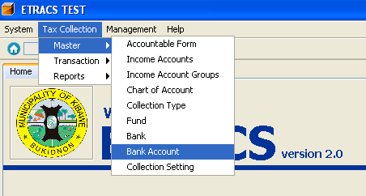
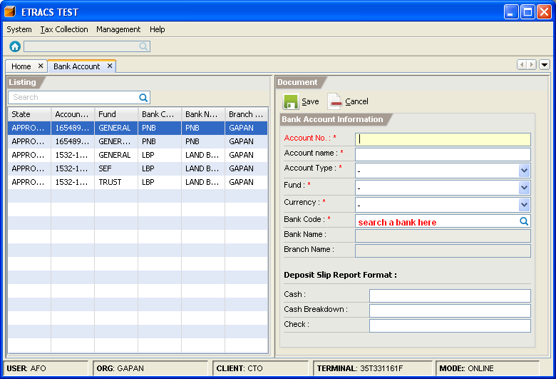
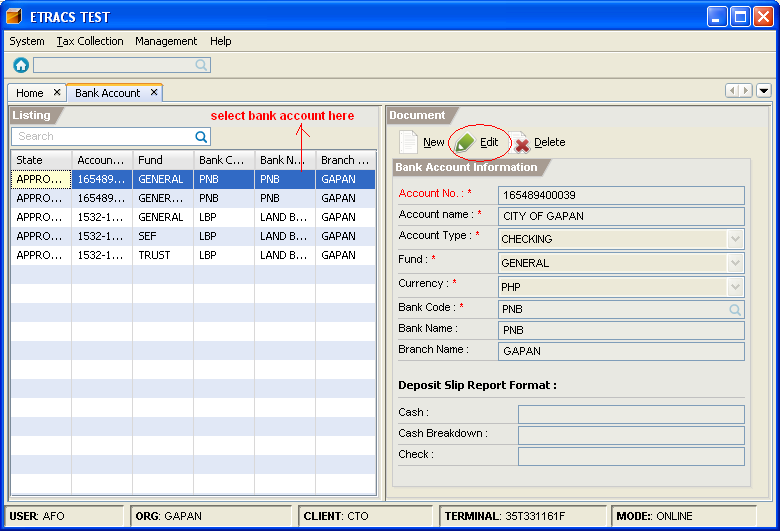
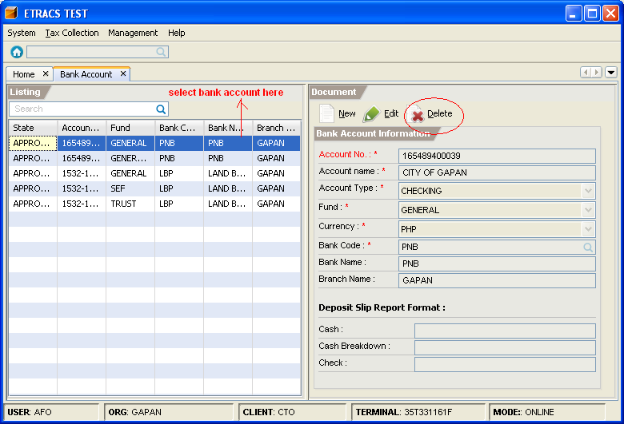

Managing Bank Accounts
This facility enables you to add, edit, and delete a bank account.
How to add a bank account?
1. On the menu toolbar, go to "Tax Collection -> Master -> Bank Account" item.

2. Click on the "New" button.
3. Fill in the bank account information, and specify its deposit slip report formats.
To search the Bank, type the bank code and press [Enter]. Select a bank from the list, and click on the "OK" button or press [Enter].

4. Click on the "Save" button.
5. Click on the "Approve" button.
How to edit a bank account information?
1. Go to "Bank Account" page. (Please refer to Adding a Bank Account - Step 1)
2. Select the bank account item from the list, and click on the "Edit" button.

3. Modify the bank account information.
4. Click on the "Save" button.
How to delete a bank account?
1. Go to "Bank Account" page. (Please refer to Adding a Bank Account - Step 1)
2. Select the bank account item from the list, and click on the "Delete" button.
